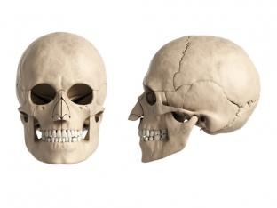

Cabeça
O ornitorrinco tem focinho, que lembra um bico de pato, é alongado e coberto por uma pele glabra, macia, úmida e encouraçada, inteiramente perfurado por poros com terminações nervosas sensitivas. As narinas também se abrem no focinho, na metade dorsal superior, e estão posicionadas lado a lado.
Os olhos e as orelhas estão localizados em um sulco logo após o focinho, esse sulco é fechado por uma pele quando o animal está sob a água.
Enquanto o ser humano possui um crânio com a mandíbula menor e um queixo proeminente, ausente da crista sagital (o que representa menores músculos ligados à mandíbula, tendo assim menor força durante a mordida) e focinho, com face reta.
